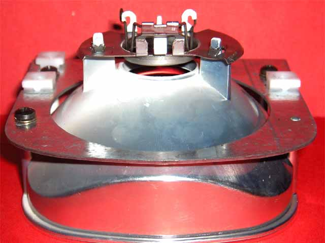
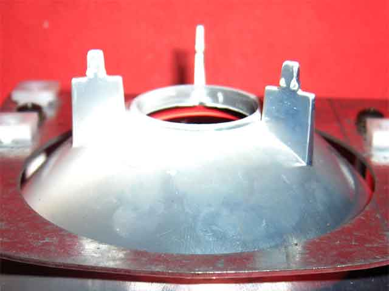
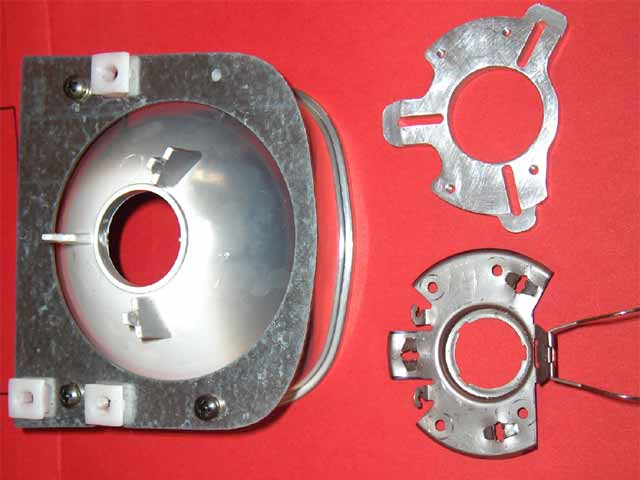
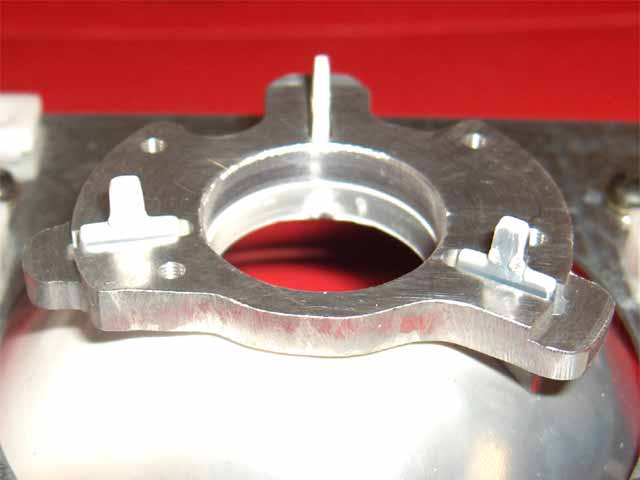
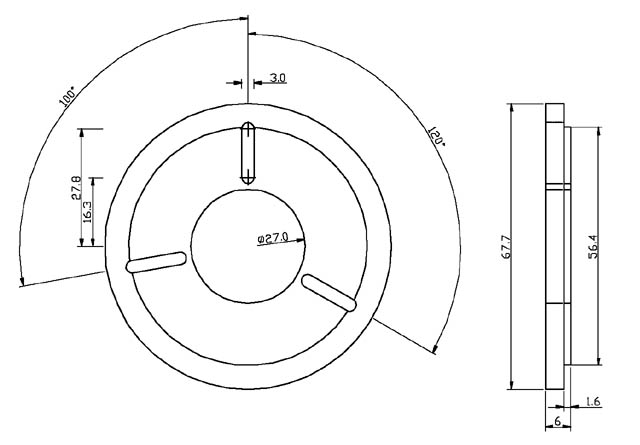
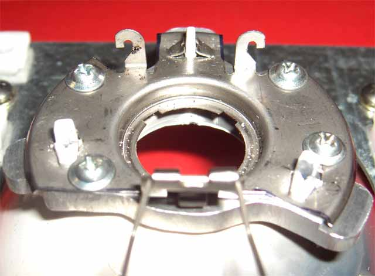
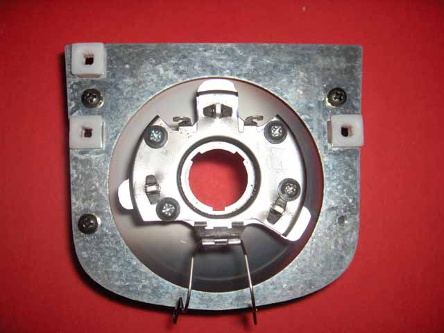

Within a week of my warranty expiring, I noticed that the high beam light patch moved around a little more than it should. On removing the rubber cover, the lamp and it's stainless steel mounting base also came out. The base is normally held in place by 3 pressed clips, working on corresponding plastic pins. My pins had failed.
|  |  |
The reflector shown here is fully functional, but you can see what will happen if the pins break off. There's nothing left for the base to clip on to.
|  |  |
The solution involves machining an aluminium Lamp Plate, screwing the Lamp Base to it, and gluing the Lamp Plate to the remaining plastic shoulders. Use acrylic glue, or some other suitable glue that can withstand at least 100C and remain rigid, bond to aluminium and plastic, and fill a gap of at least 0.5mm. Dynagrip plastic Weld (p/n:49408) should do the trick.
|  |
Assemble the plate and base, with a piece of paper between them. This will prevent excess glue from attaching to the base. It should be removable.
|  |  |
Apply glue to the plate and the reflector pins, and assemble. If assembly is vertical, hold it in
position with tape.
Dynagrip Plastic Weld is fully cured in 24 hours.
Once cured, remove the base and the paper shield. Clean up, if necessary, and reassemble using Loctite
243 on the threads.